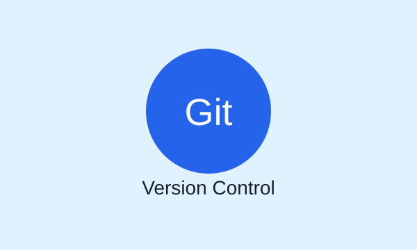
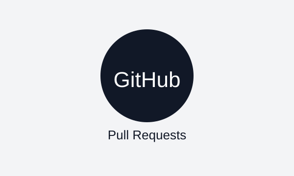
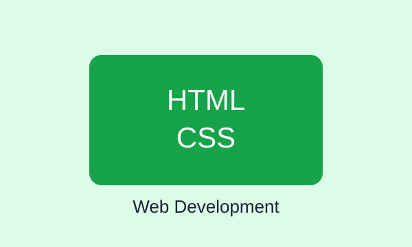

Git
Git залишається основним інструментом контролю версій
Система Git дозволяє розробникам зберігати історію змін, працювати з гілками та безпечно об'єднувати результати командної роботи.
Технологічна практика 2026 FIRST
Добірка коротких новин про Git, GitHub та сучасну веброзробку.

Система Git дозволяє розробникам зберігати історію змін, працювати з гілками та безпечно об'єднувати результати командної роботи.

Завдяки Pull Request учасники проєкту можуть переглядати зміни, залишати коментарі та погоджувати оновлення перед додаванням у головну гілку.

Навіть прості сторінки потребують правильної структури, адаптивної верстки та акуратного оформлення для зручності користувача.